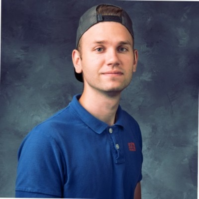
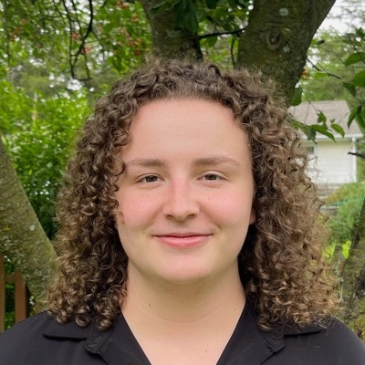
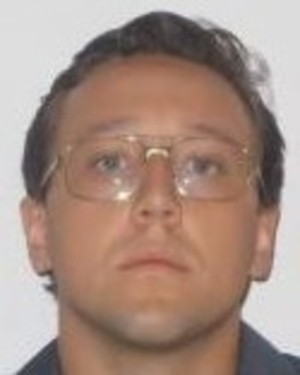

Cooperative Autonomous Systems Lab
I direct the CAS Lab at the University of Iowa, where my group develops and tests algorithms for controlling multiple autonomous vehicles in real time.
The facility has a motion capture system that provides position data with sub-millimeter accuracy, along with several quadrotor UAVs and ground robots. Students use the lab to design, implement, and test planning and control algorithms for autonomous systems.
Safety is a main concern. When vehicles are in use, they operate inside a large area closed off with a net. The lab is upgraded continuously and will house more robots for testing large swarms of autonomous vehicles.
Current students
- Gage MacLin PhD student · Multi-vehicle planning
-

Vladimir Petrov PhD student · Robust control of underwater vehicles - Ean Lovett PhD student · Optimal control
-

Mia Scoblic PhD student · Multi-vehicle coordination -

Nick Gorman MS student · Real-time path planning for UAVs; engineer at Collins Aerospace
Alumni
Openings
I am currently looking for one postdoc and one PhD student. To apply, email me at venanzio-cichella@uiowa.edu.